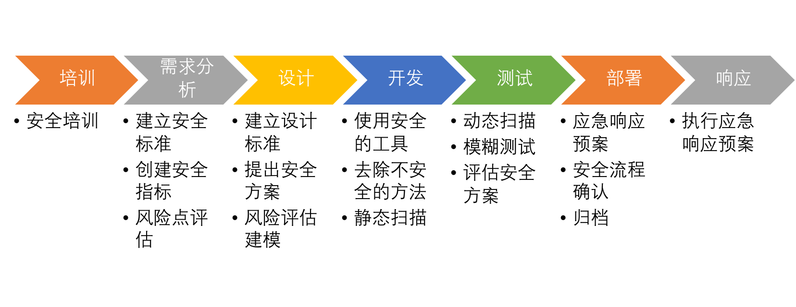

- 00 开篇词 别说你没被安全困扰过.md.html
- 01 安全的本质：数据被窃取后，你能意识到问题来源吗？.md.html
- 02 安全原则：我们应该如何上手解决安全问题？.md.html
- 03 密码学基础：如何让你的密码变得“不可见”？.md.html
- 04 身份认证：除了账号密码，我们还能怎么做身份认证？.md.html
- 05 访问控制：如何选取一个合适的数据保护方案？.md.html
- 06 XSS：当你“被发送”了一条微博时，到底发生了什么？.md.html
- 07 SQL注入：明明设置了强密码，为什么还会被别人登录？.md.html
- 08 CSRF_SSRF：为什么避免了XSS，还是“被发送”了一条微博？.md.html
- 09 反序列化漏洞：使用了编译型语言，为什么还是会被注入？.md.html
- 10 信息泄露：为什么黑客会知道你的代码逻辑？.md.html
- 11 插件漏洞：我的代码看起来很安全，为什么还会出现漏洞？.md.html
- 13 Linux系统安全：多人共用服务器，如何防止别人干“坏事”？.md.html
- 14 网络安全：和别人共用Wi-Fi时，你的信息会被窃取吗？.md.html
- 15 Docker安全：在虚拟的环境中，就不用考虑安全了吗？.md.html
- 16 数据库安全：数据库中的数据是如何被黑客拖取的？.md.html
- 17 分布式安全：上百个分布式节点，不会出现“内奸”吗？.md.html
- 18 安全标准和框架：怎样依“葫芦”画出好“瓢”？.md.html
- 19 防火墙：如何和黑客“划清界限”？.md.html
- 20 WAF：如何为漏洞百出的Web应用保驾护航？.md.html
- 21 IDS：当黑客绕过了防火墙，你该如何发现？.md.html
- 22 RASP：写规则写得烦了？尝试一下更底层的IDS.md.html
- 23 SIEM：一个人管理好几个安全工具，如何高效运营？.md.html
- 24 SDL：怎样才能写出更“安全”的代码？.md.html
- 25 业务安全体系：对比基础安全，业务安全有哪些不同？.md.html
- 26 产品安全方案：如何降低业务对黑灰产的诱惑？.md.html
- 27 风控系统：如何从海量业务数据中，挖掘黑灰产？.md.html
- 28 机器学习：如何教会机器识别黑灰产？.md.html
- 29 设备指纹：面对各种虚拟设备，如何进行对抗？.md.html
- 30 安全运营：“黑灰产”打了又来，如何正确处置？.md.html
- 加餐1 数据安全：如何防止内部员工泄露商业机密？.md.html
- 加餐2 前端安全：如何打造一个可信的前端环境？.md.html
- 加餐3 职业发展：应聘安全工程师，我需要注意什么？.md.html
- 加餐4 个人成长：学习安全，哪些资源我必须要知道？.md.html
- 加餐5 安全新技术：IoT、IPv6、区块链中的安全新问题.md.html
- 模块串讲（一）Web安全：如何评估用户数据和资产数据面临的威胁？.md.html
- 模块串讲（三）安全防御工具：如何选择和规划公司的安全防御体系？.md.html
- 模块串讲（二）Linux系统和应用安全：如何大范围提高平台安全性？.md.html
- 结束语 在与黑客的战役中，我们都是盟友！.md.html
- 捐赠
24 SDL：怎样才能写出更“安全”的代码？
你好，我是何为舟。
安全漏洞的源头是开发，只有当开发人员写出了包含安全漏洞的代码，黑客才有可乘之机。因此，如何保障开发写出更“安全”的代码，是安全防护工作中最关键的一环。
2004年，微软提出了SDL（Security Development Lifecycle，安全开发生命周期）。因为对安全和隐私的考虑贯穿了整个软件的开发进程，SDL能够帮助开发人员写出更“安全”的代码，在解决安全合规需求的同时，也能减少由安全问题带来的损失。
和安全标准一样，SDL本质上是一个宏观指导性质的框架。但是，它确实成为了很多公司建设安全开发体系的参照标准。各个公司依据微软的SDL标准，结合自身的实际情况，衍生出了适合公司自身发展的SDL。今天，我们就一起来学习，到底什么是SDL，以及SDL是如何让开发写出更安全的代码的。
SDL中的基础概念
我们先来看一个软件开发中的经典概念：软件开发生命周期DLC（Software Development Life Cycle）（这个概念的英文缩写种类比较多，为了和SDL区分，我们用DLC代表软件开发生命周期）。SDL是以软件开发生命周期为基础发展成的安全框架，所以，了解DLC能够帮助我们更好地认识SDL。
DLC将软件开发过程分为5个阶段：需求分析、设计、开发、测试和部署。DLC对5个阶段的具体描述，都是以业务功能为核心进行展开的，并没有涵盖安全的工作。这显然不安全。
而且我们都知道，安全问题对公司的威胁是客观存在的。因此，很多公司将安全纳入到测试的工作中。但是，这种做法会导致两个问题：第一，安全问题要等到软件开发完成后才能发现。这个时候，因为一个安全隐患（不是BUG），让开发人员重启开发流程，推动上会遇到较大的阻力；第二，只能关注到最终完成的软件，往往会导致安全人员因为对业务了解不足，漏过一些安全隐患。这些问题的出现，让业内亟需一个能够更好地满足安全需求的软件开发流程，SDL也就应运而生了。
什么是SDL？
SDL的出现不是为了颠覆传统的DLC框架，而是希望在DLC中加入足够清晰的安全需求，以此来为软件开发的过程提供完整的安全防护。SDL的标准执行流程有7个步骤：安全培训、需求分析、设计、开发、测试、部署和响应。流程如下图：

接下来，我们就一起来看一下，这些步骤中都包含哪些安全工作。
1. 培训
在SDL中，安全培训是第一步。之所以会这么设计，就是因为很多公司都对安全人员给予了过高的期望，认为他们能够解决一切的安全问题，而忽略了对开发、测试、运维等人员的安全意识培训。这就导致安全人员一直处于一个“救火”的状态，无法从根本上杜绝安全问题的产生。
因此，SDL中明确提出：开发、测试、运维和产品经理每年至少进行一次安全培训。培训的内容包括安全概念和框架、威胁评估、Web安全、安全测试以及隐私保护等。
2. 需求分析
SDL要求在需求分析的过程中，我们必须把安全防护的需求考虑进来。在需求分析阶段，安全人员提出的防护需求主要包括三个方面。
- 安全标准：为软件制定对应的安全标准。比如，需要对敏感数据进行加密存储、需要进行二次认证等。
- 安全指标：定义软件在上线时需要满足的安全指标。比如，在上线时，软件必须经过安全测试，且不允许存在任何高危漏洞。
- 风险点评估：安全人员会对整体需求进行评估，找出需要对安全性重点关注的部分，也就是风险点。比如某个需求会使用到用户的隐私数据，那么风险点就是这些隐私数据。
这三个方面的安全需求，能够为软件开发划定最低的安全保障，也能够时刻提醒软件开发环节的各个人员保持对安全的关注。
3. 设计
对需求进行分析整理之后，我们就需要对软件的功能和架构进行设计了。那我们都需要设计些什么呢？其实就是为后续的开发、测试和部署环节制定响应的方案和计划。针对上面整理出的三个方面的安全需求，我们也需要在设计环节中，给出具体的实现方案。
- 为安全标准确定具体的实施方案。比如，对敏感数据做加密存储，那么，具体的加密算法是什么，密钥怎么生成和存储，都需要在设计阶段确定方案细节。
- 安全指标的响应方案则是在软件开发方案中，尽可能地考虑安全问题，降低可能出现风险的概率。比如，依据最小权限原则，明确软件每个用户和角色能够进行的操作。或者确定审计需求，明确各个阶段需要记录的日志及时发现攻击行为。
- 对于需求阶段定义的风险点进行完整的风险评估。依据识别数据、攻击和漏洞的方式，明确需要采取的安全防护机制，提升这些关键风险点的安全性。
在设计的过程中，我们需要对安全和开发成本进行平衡考量，使得最终的安全设计方案能够被所有项目人员认可。
4. 开发
在开发阶段，安全人员的工作则是尽可能地避免开发人员的代码出现安全问题。那究竟应该怎么做呢？其实，我们可以通过限制工具和方法、定期审查代码来实现。
首先，我们可以限制开发人员使用的工具和方法。比如：为了避免插件漏洞，我们可以只允许开发人员使用通过我们验证的插件和工具；为了避免SQL注入漏洞的出现，我们可以限制开发人员使用字符串拼接的方式执行SQL等。
其次，我们也需要对开发人员产出的代码进行定期的安全审查，通过人工或者工具分析，发现一些没有得到限制的安全漏洞。比如，没有对用户的输入进行验证等。
5. 测试
在测试阶段，测试人员会对软件的功能进行测试，安全人员需要对软件的安全性进行测试。测试的内容主要包括两个方面。
一方面，我们需要评估软件是否符合当初的安全设计方案，是否存在不一致的地方。有的时候，虽然我们在设计的时候考虑了最小权限原则，但是在实际开发的过程中，也可能由于开发人员的理解偏差或者BUG，导致权限滥用的出现。因此，在测试阶段我们需要依据当初的安全设计方案，一项一项去确认是否符合要求。
另一方面，我们要进行动态的安全测试。动态测试的方法有两种，执行漏洞扫描和进行模糊测试。漏洞扫描很好理解，我们可以通过向软件发起一些测试性的攻击脚本，来验证是否存在漏洞。模糊测试就是不断向软件发起随机或者异常的请求，然后看软件是否出现报错等情况，以此来检测可能存在的漏洞。
6. 部署
在测试完成之后，软件就可以准备部署上线了。
到这一步，可以说安全人员已经把安全漏洞出现的可能性降到最低了。但是，我经常说“没有100%的安全，安全人员需要随时为可能发生的安全事件做好防护准备”，所以，在软件上线前，我们需要做好安全预案。
我来举个例子。一旦出现数据泄露事件，运维人员必须第一时间对数据库进行隔离，开发人员需要下线软件相关功能，产品人员需要做好用户的安抚工作，安全人员需要立即对相关日志进行保存，然后分析事件产生的原因。这就是一个安全预案的基本框架，但是每一步的具体操作，还需要我们根据实际情况来细化。
预案准备完成之后，我们还需要再一次进行安全确认工作。这个过程主要是来确定，软件的整个开发流程是否有严格按照既定的SDL流程进行，以及最终的软件是否满足我们开始提出的三个安全需求。
在各项事情都确认完毕之后，我们就需要对整个项目进行归档了。归档之后，包括代码、需求列表、设计方案和应急预案在内的所有的内容都不允许改动。
完成了安全预案、安全确认和归档之后，我们就可以进行软件的最终部署上线了。
7. 响应
软件上线之后，安全人员所需要做的，就是及时响应和处理安全事件。这就需要用到我们在部署阶段制定的安全预案了，为了执行这个安全预案，我们需要成立安全应急响应小组。这个小组的工作就是对安全事件以及外界的漏洞情报进行监控，一旦发现安全事件立即对事件进行评估，决定需要启动的安全预案。通过安全应急响应小组，我们可以保持对线上软件安全的时刻监控，保障软件的安全和稳定。
现在，相信你已经能够理解SDL是如何从根源上解决安全问题的了。我来简单总结一下：SDL通过安全培训来解决人的问题，然后在需求和设计阶段提出安全需求，在开发和测试阶段发现安全漏洞，最终在部署和响应阶段处理安全问题。
如何推动SDL落地？
尽管SDL能够从根本上解决安全问题，但是SDL的落地却依然存在较大挑战。最主要的原因就在于，SDL更像一个规章制度，它必须获得开发人员的认可，而大部分的开发人员很排斥安全制度。
尽管如此，为了提升公司的整体安全性，我们要尽力推动它落地。那究竟该怎么做呢？我们可以从三方面入手，降低推动SDL落地的难度。
1. 我们要基于现有的制度拓展SDL。
如果公司已经比较成功地实施了DLC，那SDL的成功落地就已经实现一半了。因为这说明，开发人员已经在一定程度上认可或者接受了这种制度化，我们只需要在此基础上再加入一部分安全内容，就能实现SDL的落地了。这对开发人员的影响不大，也就更容易接受。
因此，我个人建议不要从零开始强推SDL，应该循序渐进，先定义好普通软件开发的制度，再加入安全元素。
2. 我们在落地SDL的时候要灵活变通，不要生搬硬套。
SDL的执行流程非常厚重，如果我们严格按照SDL的标准流程执行，在软件开发的每个步骤中加入一定的安全工作，这无论对谁都是不小的负担。所以，我们要根据公司的实际情况灵活变通。
变通的方法有很多，实现方式上的变通是最常见的一种。我来说几个常见的例子。
- 将安全培训加入到公司定期举办的内部技术交流分享会中。这样一来，既不会因为强制培训的要求引发开发人员的不满，又能提升培训的效果。
- 在制定安全方案的时候，将安全扫描加入到开发提交代码、检测代码质量的过程中，这样就能避免开发人员更改开发流程。
总之，实现方式上的变通就是将SDL的各个环节按照开发人员最认可的形式，进行灵活的设计和运转，提升SDL的落地效率。
3. 在SDL的覆盖面上，我们也可以有所取舍。
每个公司都有大大小小的多个业务线，让每个业务线都严格遵守这个SDL流程，是很难实现的。因此，对于一些量级小、敏感数据少的业务，我们可以适当降低安全标准。
以开发设计环节为例，我们可以不需要根据具体业务提出具体的安全需求，而是梳理出一份包含常见的安全设计方法的通用列表（包含认证规范、加密标准等）。然后，直接将这个列表发放到开发人员手上，让他们自评。这样既提升了开发人员的工作效率，又降低了我们的工作量。
总结
好了，今天的内容讲完了。我们来一起总结回顾一下，你需要掌握的重点内容。
SDL可以从根源上解决安全问题：通过加入安全的角色和职责，SDL让安全贯穿软件开发的整个生命周期；通过事前的培训和事后的应急响应，SDL为软件提供了额外的安全防护保障。
尽管SDL非常实用，但是它的落地仍然面临很多问题。为了推动SDL落地，我们要基于公司已有的开发流程和机制，灵活部署SDL。这样我们才能在做出最小改变的情况下，仍然将安全贯穿于软件开发的各个流程之中，提升公司整体的安全性。
目前，安全仍然是一个比较特殊的工作，并没有纳入到软件开发的必备工作中去，这也是SDL在国内成功案例并不多的一个主要原因。但是我相信，正如微软等老牌企业的发展历程一样，随着IT行业的不断发展，安全工作会和测试工作一样，逐渐变成一个必备环节。SDL也会成为各个公司的核心规则制度，被大部分人接受。
思考题
最后，我们来看一道思考题。
SDL的成功落地需要开发人员的支持和安全人员的高效率工作。你可以思考一下，在SDL落地的开发和测试中，有哪些工作是可以通过工具来自动或者半自动化地完成的呢？这些工具的工作原理又是怎么样的呢？
欢迎留言和我分享你的思考和疑惑，也欢迎你把文章分享给你的朋友。我们下一讲再见！
© 2019 - 2023 Liangliang Lee. Powered by gin and hexo-theme-book.